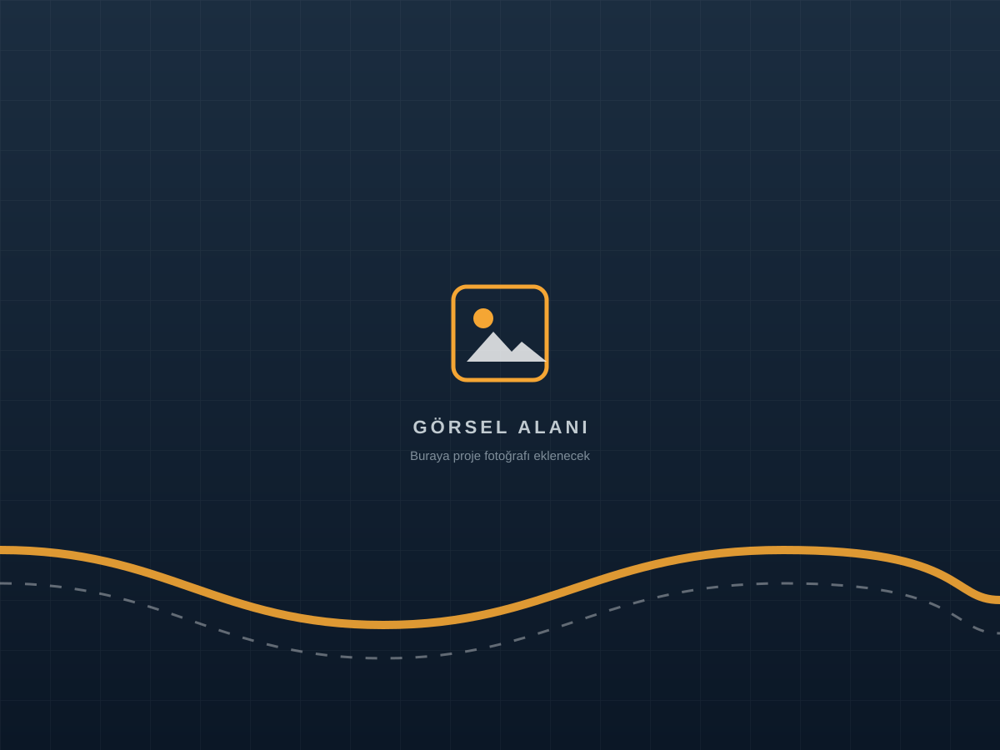

Doğalgaz
Kurum şartnamesine uygun kılıf ve derinlikte geçiş.
Hizmetlerimiz · 06

Altyapı Boru Geçişleri
Doğalgaz, su, kanalizasyon, enerji ve haberleşme hatlarına yönelik boru geçişi uygulamalarının koordinasyonu ve uygulaması.
Altyapı boru geçişleri; farklı kurumlara ait hatların yol, dere, demiryolu ve yapı altından güvenli biçimde geçirilmesini kapsar. Her hat türünün teknik şartı farklıdır: doğalgazda kılıf ve derinlik, suda eğim, fiberde koruma borusu öne çıkar.
Yiba, projenin başından itibaren kurum, yüklenici ve saha ekibi arasında koordinasyon sağlar; uygun kazısız yöntemi belirler ve uygular.
Neden Yiba?
Kurum şartnamesine uygun kılıf ve derinlikte geçiş.
Eğim ve kot hassasiyetiyle hat geçişi.
Kablo koruma borularının yol altı geçişleri.
Koruyucu kılıf ile kesintisiz haberleşme altyapısı.
Sık sorulan sorular
Uygun çapta kılıf veya çoklu boru çekimiyle aynı güzergâhta birden fazla hat geçirilebilir.
Evet, geçiş için gerekli teknik dosya ve kurum süreçlerinde deneyimimizle destek oluyoruz.
Keşifte mevcut hatlar belirlenir, güzergâh buna göre planlanır ve yer altında izlenerek uygulanır.